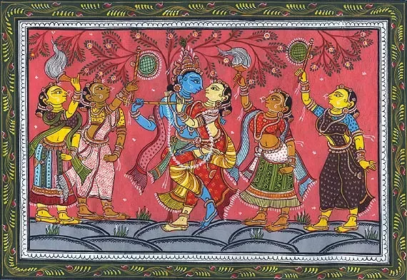

What is this website about?
Welcome to our website, dedicated to providing users with comprehensive information about Hinduism. Here, you will discover a wealth of knowledge covering various aspects of this ancient and diverse religion. From its rich mythology and scriptures to its profound philosophical insights, rituals, festivals, and more, our platform serves as a gateway to understanding the intricacies of Hinduism. Whether you're a curious novice or a devout follower seeking deeper understanding, our curated content aims to enlighten and inspire. Join us on this journey of exploration and discovery as we delve into the vibrant tapestry of Hindu culture and spirituality.
Hinduism encompasses a vast array of texts and scriptures, covering various aspects of philosophy, theology, mythology, rituals, and ethical teachings. While it's impossible to list every single Hindu text due to the sheer volume, here are some of the most significant and widely recognized ones. Click on the highlited text to gain complete information:
(1)Vedas:
The Vedas are ancient scriptures that form the foundation of Hinduism, one of the world's oldest religions. Dating back thousands of years, they are revered as the oldest sacred texts in Hinduism and are considered the authoritative source of religious knowledge and spiritual wisdom. The word "Veda" is derived from the Sanskrit root "vid," which means "knowledge" or "wisdom."click on the highlited text to learn more
(2)Upanishads:
The Upanishads represent the philosophical essence of Hinduism, delving into profound inquiries about the nature of reality, the self, and the ultimate truth. These ancient texts, composed between 800 BCE to 200 BCE, form the concluding part of the Vedic literature and are considered the culmination of Vedic thought. The word "Upanishad" is derived from the Sanskrit roots "upa" (near), "ni" (down), and "shad" (to sit), indicating the intimate setting in which these teachings were traditionally imparted—a close and direct transmission from teacher to student in a secluded environment.Click on the highlited text to leatn in full detail
(3)Epics:
Hinduism, one of the world's oldest religions, is rich with mythology, legends, and epics that serve as foundational texts shaping the beliefs, values, and cultural practices of millions of people. Among the most renowned and revered are the Hindu epics, which narrate the stories of gods, heroes, and moral dilemmas, providing profound insights into the nature of existence and the human conditionClick on the highlited text to gain complete information
(4)Puranas:
The Puranas are a vast genre of ancient Indian texts that encompass a wide range of subjects including cosmology, mythology, genealogy, philosophy, religious rituals, and moral teachings. The term "Purana" is derived from the Sanskrit word "Pura," meaning "ancient" or "old," and "ana," meaning "knowledge" or "lore." Together, "Purana" translates to "ancient lore" or "ancient tales." These texts are considered to be among the oldest literature in Hinduism and are believed to have been composed over a period spanning several centuries, from around the 4th century BCE to the 16th century CE.Click on highlited text to learn more.
(5)Smritis:
In Hinduism, alongside the Vedas which are considered the primary scriptures, the Smritis hold significant importance. While the Vedas are regarded as Shruti, meaning "heard" or "revealed," the Smritis are classified as Smriti, meaning "remembered" or "memorized." Smritis are texts that are believed to be composed by sages and seers based on their insights, experiences, and interpretations of the eternal truths enshrined in the Vedas.Click on highlited text to learn more
(6)Tantras:
Historical Context: Tantra emerged around the 5th century CE, although its roots can be traced back to earlier Vedic and pre-Vedic traditions. It arose as a response to the prevailing religious and philosophical trends, incorporating elements of Vedic rituals, Yoga, Shaivism, and Shaktism.Click on hyper text to learn moreClick on the above text to learn more
(7)Darshanas:
The Darshanas represent six orthodox schools of Hindu philosophy, each offering a unique lens through which to comprehend the nature of reality, the self, and the cosmos. Rooted in the Vedas, these philosophical systems emerged during ancient India's classical period, between 600 BCE and 200 CE. They sought to explore fundamental questions about the nature of existence, the origin of the universe, the nature of knowledge, and the path to liberation (moksha).Click on the Highlited text to learn more
(8) Agamas:
The term "Agama" originates from the Sanskrit root "agama," which means "that which has come down" or "tradition." According to Hindu tradition, the Agamas are considered to be divine revelations imparted by the respective deities or their close associates. These revelations were transmitted orally from guru to disciple over generations before being recorded in written form. The Agamic texts are believed to have originated from the divine realms and were revealed to humanity to guide them in the practice of rituals, worship, and spiritual disciplines.Click on highlited text to learn more
(9) Dharma Shastras:
Dharma Shastra, often referred to as the "science of righteousness" or "law of righteousness," constitutes a vital component of Hindu philosophy and legal tradition. Rooted in ancient Indian civilization, Dharma Shastra provides a comprehensive framework for individual conduct, social organization, governance, and justice administration. It encompasses a wide array of topics, including ethical principles, moral values, ritual practices, legal norms, and societal duties, all aimed at fostering harmony, justice, and spiritual well-being within society.Click on the highlited text to learn more
These texts collectively form the foundation of Hindu religious and philosophical thought, providing guidance, inspiration, and insight into the diverse facets of Hindu culture and spirituality.